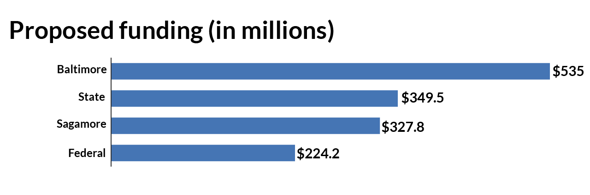

Port Covington
redevelopment
examined
Sagamore Development is requesting billions in public funds.
Is it a good deal for Baltimore?
Sagamore Development, a private real estate firm owned by billionaire Under Armour CEO Kevin Plank, has proposed a plan to redevelop Port Covington, a mostly industrial waterfront area in South Baltimore. Over the next two decades, the ambitious plan would remake the area with offices, homes, shopping, restaurants, waterfront parks and a new state-of-the-art campus for Under Armour.
Sagamore has requested $1.1 billion in support from local, state and federal governments for needed infrastructure for the roughly $5.5 billion project. This includes $535 million in tax increment financing from Baltimore City, with the money coming from municipal bonds and repaid through new property taxes generated by the project. This is by far the largest tax-increment financing deal, or TIF, ever proposed in Baltimore and among the largest in the country. The developers of Harbor Point, for example, received $107 million in TIF funding for a roughly $1 billion project.
Supporters say the project, which encompasses about 260 acres, changes the city for the better, creating thousands of jobs, securing Under Armour’s growing presence and revitalizing another part of the city’s waterfront.
Critics charge the proposal gives too big a subsidy to Sagamore, given the firm’s resources and Baltimore’s critical needs in other areas. They say city support for the improvements will exacerbate the city’s economic divide as repayment of the TIF restricts the general use of additional tax revenue for decades. They also voiced concerns about how fast the deal was moving through the city’s approval process.
Below we examine the proposed project and criticisms.
What is being proposed?
Sagamore Development Co., the real estate firm privately owned by Under Armour CEO Kevin Plank, plans to create a new street grid and ring of riverfront parks on mostly empty industrial land in South Baltimore.
The firm owns about 160 acres of the roughly 260-acre master plan area, a peninsula south of Interstate 95 and Federal Hill. The area contains a Walmart, which closed this year, and a former Sam's Club, that’s already been converted into Under Armour offices, as well Swann Park, City Garage, Nick's Fish House and The Baltimore Sun’s printing plant, for which the newspaper has a long-term lease.
The firm is seeking more than $1.1 billion in support from local, state and federal governments for needed infrastructure. This includes $535 million in tax increment financing (TIF) from Baltimore City, with funding coming from municipal bonds and repaid through new property taxes generated by the project. Sagamore will sell land to partners who will build new apartments, stores and offices, as well as manufacturing space and a new headquarters for Under Armour.
The master plan divides Port Covington into several districts: West End, Cromwell Street, Hanover Street, Founders Park, East End, East Waterfront, East Waterfront Park, West Waterfront Park and UA Campus.
It will feature several new parks and greenways.
The development will include shared-use recreational paths, bike lanes, bike-sharing stations and eventually a bike and pedestrian bridge to Westport.
Phase 1: Distillery, City Garage, Bike Path, Nick's
Phase 1 of the project, which already is underway, redeveloping City Garage as offices and incubator space and building a whiskey distillery for Plank's Sagamore Spirit rye as well as creating a bike path.
Phase 2: East Waterfront
Phase 2 will focus on the property's eastern end with designs calling for a lively shopping and residential district. The plans for this phase allow 1,000 residences -- nearly 900 of them studios or one-bedroom apartments -- as well as more than 500,000 square feet of retail space, 300 hotel rooms, 45,000 square feet of so-called "maker space" and a 2,500-square-foot "civic" building, possibly a post office. A new water taxi stand, eastern waterfront park and 1.5-acre plaza, as well as 3,000 parking spaces are also planned.
Phase 3: Hanover, Cromwell, McComas, I-95 and light rail
Phase 3 would focus on Hanover and Cromwell streets, with room for more than 1,886 additional residences; more than 240,000 square feet of retail, 1.15 million square feet of office space; 46,500 square feet of maker space and 3,350 new parking spaces. The firm also expects changes to I-95, a light rail spur and the addition of about 4,000 square feet of civic space.
Phase 4: West End
Phase 4 would focus on building out a largely residential "West End," with 2,000 more residences, including a smattering of about 74 townhouses. The West End would also include about 800,000 square feet of offices, 130,000 square feet of retail; 54,000 square feet in retail space; and 95,000 square feet in manufacturing. This phase would also involve west shore park, 13,000 square feet of civic space, including a possible school, paddock and "cultural center" or music venue.
Phase 5: West End and Founders Park
The final phase involves the involves the relocation of The Baltimore Sun, which has a long-term lease with Sagamore for its printing plant. The Sun's plant would be replaced by more than 8,500 new residences; more than 300,000 square feet of retail; about 300,000 square feet of office space and 200,000 square feet of maker space and 7,900 parking spaces. Founders Park and 11,500 square feet in civic space, identified as a possible library, would also be built as part of this phase.

If approved, the master plan and zoning allow for significantly more construction than the firm says it expects its partners to build.
- 1,500,000 square feet of destination, attraction, entertainment and specialty retail
- Over 7,500 residential units; mostly rental
- 500,000 square feet of “maker” and industrial/light manufacturing space
- 200+ hotel rooms
- A 3.9 million square foot Under Armour global headquarters
- 1,500,000 square feet of additional office space
In its TIF application the firm said it expects the development to include:
FAQ
Is the TIF a tax break?
Tax increment financing is not a tax break. But the project would receive tax breaks because it is located in an Enterprise Zone and involves environmentally damaged property. The Enterprise Zone and brownfields credits could be worth more than $760 million, according to an estimate by MuniCap, a Columbia-based consulting firm hired by the city to assess the proposed TIF.
A TIF does provide tax benefits, since all of the new taxes are being used for needs generated inside the district.
The buyer of the bonds -- in this case, at least initially, Sagamore and its financial partners – can count the income from those bonds as tax exempt.
Will the properties generate enough tax revenue to pay for the TIF?
Not until 2038, according to MuniCap. But Sagamore, or whatever companies the firm sells land to, would need to pay "special" taxes estimated at $291 million to make up the difference. Sagamore or its partners also would be responsible for covering the TIF's costs through special taxes if property values plunged in a real estate crash.
How much money would Sagamore make?
The TIF under consideration is structured to allow the firm to earn a profit of about 9 percent, or about $402.3 million. That calculation only includes the impact of the TIF as well as tax credits and land sales by Sagamore to partners.
The city and Sagamore have not yet settled on a "profit-sharing" agreement, a typical part of TIF deals.
Will the city make money?
MuniCap estimates the project would generate $1.7 billion in revenue for the city over 41 years, after expenses.
The expenses include $1.4 billion in interest payments on the TIF, as well as about $2.16 billion that includes additional city services, such as fire and police.
Those costs would be offset by new revenue that includes $1.5 billion in new property taxes, after the TIF payments, as well as $1.6 billion in personal income taxes from those living or working in Port Covington.
How will this deal affect funding for city schools?
At this point, it's unknown. City schools are jointly funded by the city and the state. As it stands now, the increase in property values associated with the project – without an equivalent increase in tax revenue available for school funding – would lead to reduced state funding for schools. Lawmakers have said they plan to change how the state distributes school funding to account for TIF projects.
How many jobs will the project generate?
MuniCap expects the project to generate nearly 35,000 permanent jobs when fully built out, including positions that are part time or located elsewhere in Baltimore. MuniCap also estimates that there will be the equivalent of about 14,603 new full-time, temporary construction jobs at the site over the life of the project.
Read more questions and answers about the TIFBy the numbers
Sagamore has requested federal, state and local funds to pay for infrastructure for the Port Covington project. It estimates there will be $4 billion more in private investment in the project.

$535 million has been requested for infrastructure from Baltimore City*, including:
$349.5 million is what Sagamore expects to seek in in state funds, including $165.4 million for a Light Rail spur.
$327.8 million is what Sagamore is contributing to the project.
$224.2 million is what Sagamore expects to seek in federal funds, including $199 million for modifications to Interstate 95
MuniCap projects that the Port Covington properties owned by Sagamore would be worth $2,608,900,706 at full build out – more than 35 times the present value, $72,766,300.
Baltimore as a whole is assessed at $35,729,796,000.
* The city would end up issuing about $658.6 million in 30-year bonds, including $5 million for insurance costs and $65.8 million for a reserve fund.